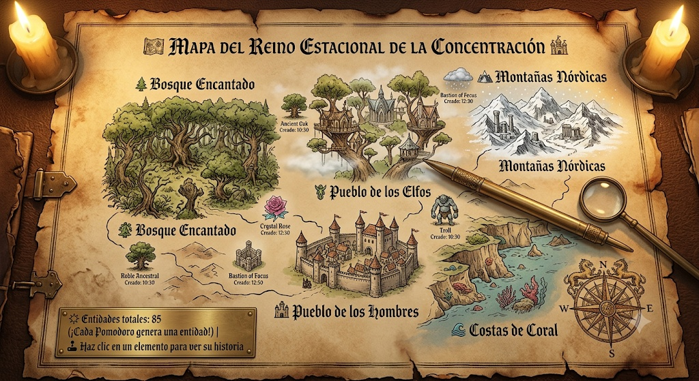

📜 CAMINO REAL · PLANTAS MEDICINALES
▼
25:00
⚔️ Modo Estudio · 25 min
▶ INICIAR POMODORO
0
🌱 Semillas
0
⏱️ Pomodoros
0
🌿 Aprendidas
🗺️ Inicio del camino…
📚 PLANTAS APRENDIDAS
Visita pueblos para aprender plantas medicinales
🖱️ Arrastra el mapa · 🔍 Rueda = zoom · 🏘️ Clic en pueblo = ingresar
↺ Reiniciar